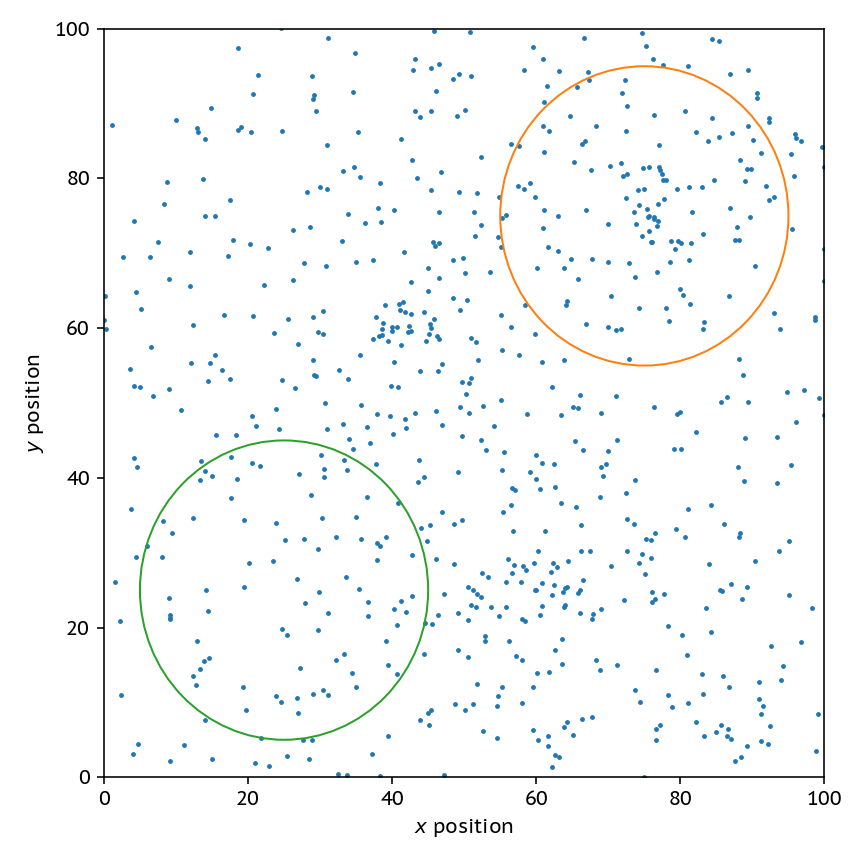
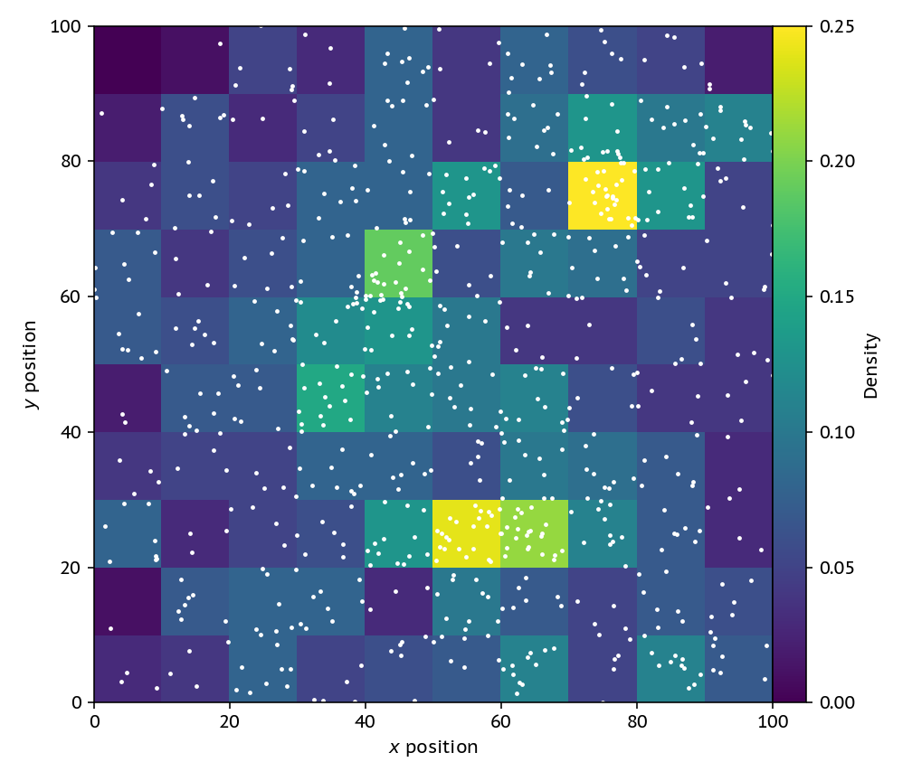
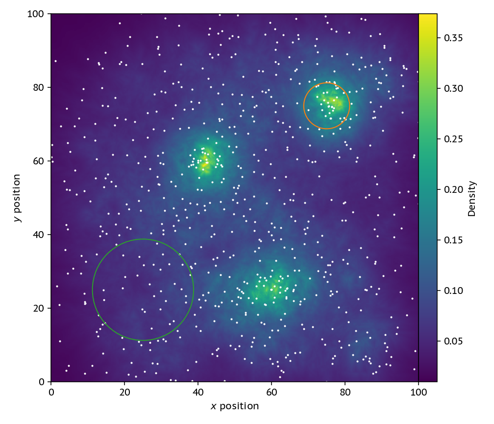
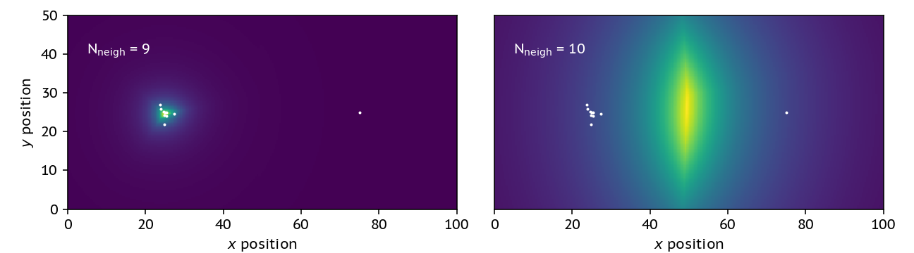
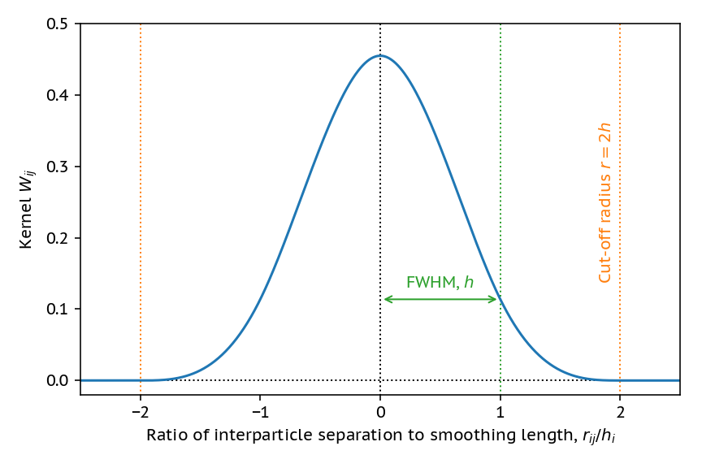
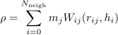
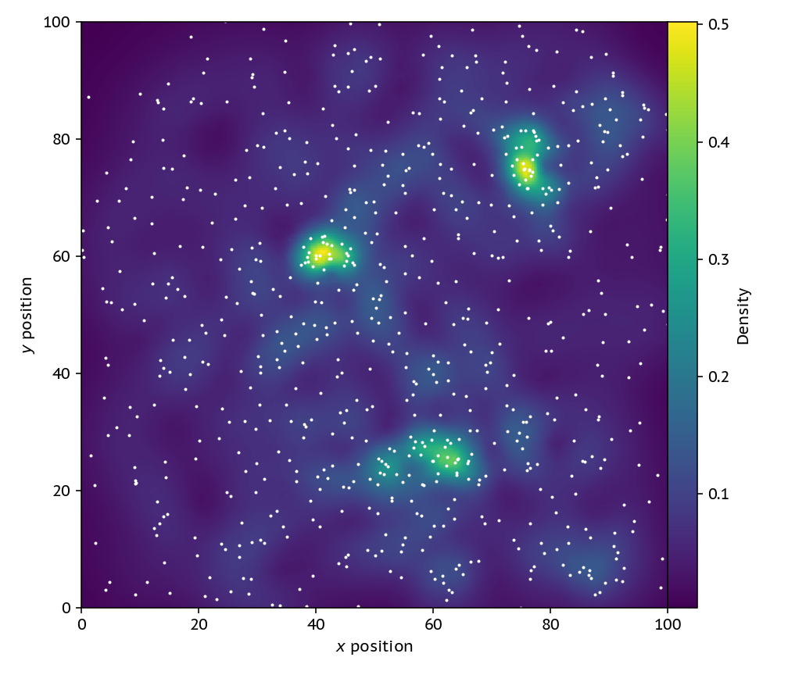
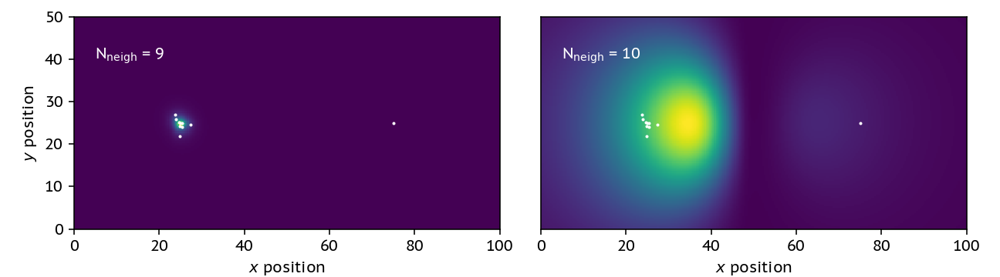

Machine Learning Algorithms in a Different Context: Smooth Fields From Particles
Sun, May 27, 2018I recently gave a talk about some new hydrodynamics schemes that we’re implementing in SWIFT, our cosmological simulation code. A hydrodynamics scheme takes a density field (or something similar) as an input, and then tells you how to move the elements due to the fluid forces that each element experiences. These schemes are all Lagrangian - they use particles - rather than the more traditional Eulerian grid schemes. This is handy, as a Lagrangian scheme gives you a bunch of conservation properties for free, and with particles you can automatically sample denser regions with more elements rather than having to “refine” your grid. Whilst putting together this talk, I noticed that there weren’t that many good descriptions about how we get a smooth density field from a collection of particles, so I thought I’d put one together!
For a Lagrangian scheme to work, we’re going to need a way to construct smooth field properties based on the particles, such as the density. It is no use if I can only use the particle properties – parts of a fluid need to know about each other! To do that, we’ll use some concepts that are rife in the machine learning community, but are often over-complicated: nearest-neighbour searching and kernel weighting.
The problem
Say that I give you the following distribution of particles:

Clearly, the field circled in orange is a higher density than the one in green, but how would I go about programatically
a) Finding dense regions, and b) Getting an accurate measure of density in those reigions?
This problem turns out to be more complicated than you would first imagine.
Attempt 1: Using a grid
The simplest thing that we can do is overlay a grid on the particles, using a fixed cell size. Then, the density in a cell is simply the number of particles in that cell divided by the size of the cell.

The problem with this is that we’re now throwing away one of the key advantages of a particle-based method; the denser regions are sampled automatically by more particles. We might have as well just used a grid from the start. Also, if we refine this grid down and down to get a nice high-resolution image, we’ll just get a scatterplot, not a nice field.
Attempt 2: Different Volumes
One step better than the grid is to change the volume of each cell, keeping the number of particles in each cell constant. Then, we can construct a grid of points at which we want to evaluate the density, and grow domains around each point until we have a certain number of particles (here 30) inside our volume. To find these neighbours to make an image we can use a KD-tree, but in the simulation code we actually use a pseudo-Verlet list. To get a density all we need to do is divide the fixed mass in each sphere (or circle in our 2D case) by this volume that is different for each point in the grid.

The new image looks much better, if not a bit noisy. This strategy also has the nice property that it ensures that each “cell” has the same poisson noise as we (by construction) make sure that they all have the same number of particles in. Where this strategy breaks down, though, is in regions with rapidly changing density. Note that the circles here show how large the volume element is for the pixel at their center.
On the left we have a cluster of 9 particles, and on the right a 10th neighbour that’s quite far away. If I change the number of neighbours in the problem I go from finding the nice cluster on the left to getting some nonsense!

The addition of this single neighbour drastically changes the shape of the density profile, and in fact finds the highest density region being in between the two clusters – which it clearly is not. Dealing with this problem requires us to have a way of weighting the particles.
Attempt 3: A smoothed density estimate
To construct a more smooth estimate of the density, we can use a smoothing kernel. This kernel ensures that particles that are further away matter less to the density estimate. We cut off the kernel, in this case, when we have 30 neighbours and define this as two times the smoothing length. The kernel we use here is a cubic spline, which is essentially an approximation to a gaussian that’s much cheaper to compute.

By using the smoothed density,

we can re-construct the smooth density map in a much less noisy way.

This smoothed map is notably different than a smoothed version of the volume changing one from attempt 2. If we were to smooth the image with a gaussian filter, we would loose the information about the different smoothing lengths with densities; this version is smoothed on the scale of the data (particles), rather than our choice of pixel sizes.
We also do much better in the changing neighbour-number comparison test:

It’s not fantastic, but at least our dense location is somewhat co-located with the actual location of the particle cluster.
Why do any of this?
Getting this smoothed estimate on the density actually allows us to construct an equation of motion that tells us how these fluids move; check out the video below that uses this in the famous Kelvin-Helmholtz test.
If you enjoyed this blog post, I suggest you go and read Daniel Price’s fantastic introduction to the method, Smoothed Particle Hydrodynamics. It’s a great way to get started!
Hopefully this has given you some idea of where else these methods that are ubiquitous in machine learning are employed! The code used to make all of these plots is available on GitHub here. It’s fairly simple, so take a look!